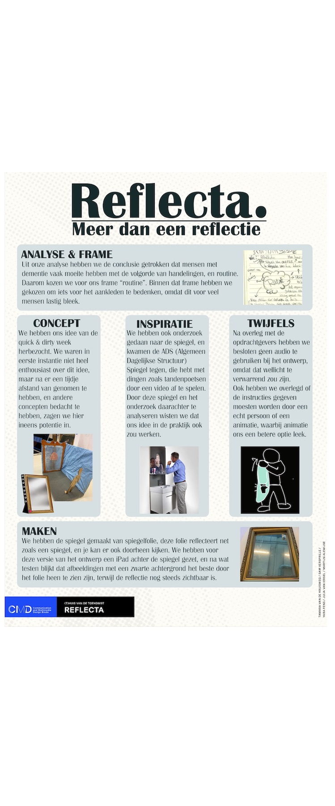
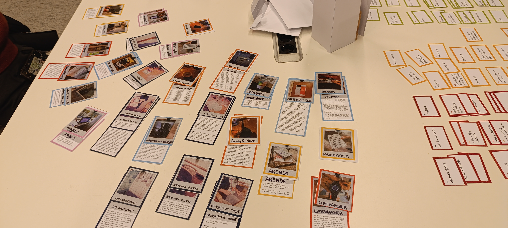

Reflecta.
Projectbeschrijving
Voor dit project werd aan ons gevraagd interactieve technologie te ontwikkelen dat ouderen met dementie zou helpen om langer (zelfstandig) thuis te blijven wonen. Samen met mijn groepje bedachten we “Reflecta.”: een spiegel die stap voor stap laat zien hoe je kledingstukken aan en/of uit trekt. Ouderen met dementie hebben hier vaak meer moeite mee omdat ze de volgorde van handelingen niet goed kunnen onthouden. In de spiegel zie je zowel jezelf als een poppetje dat laat zien hoe je een kledingstuk aan- of uittrekt.
Mijn rol
Binnen dit groepsproject heb ik me beziggehouden met research en het maken van de procesposter voor op de expositie (hiernaast te zien).


